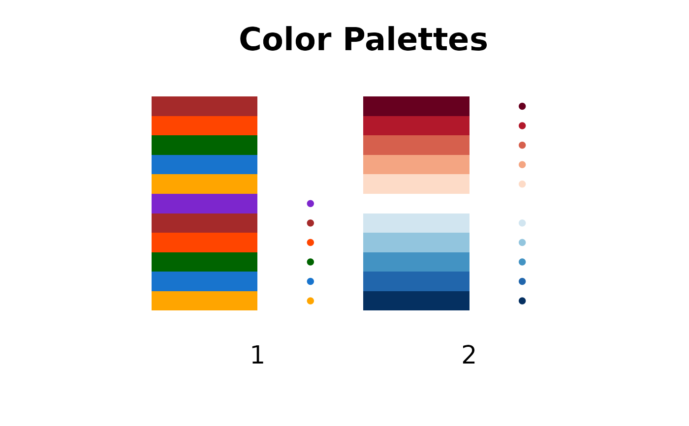
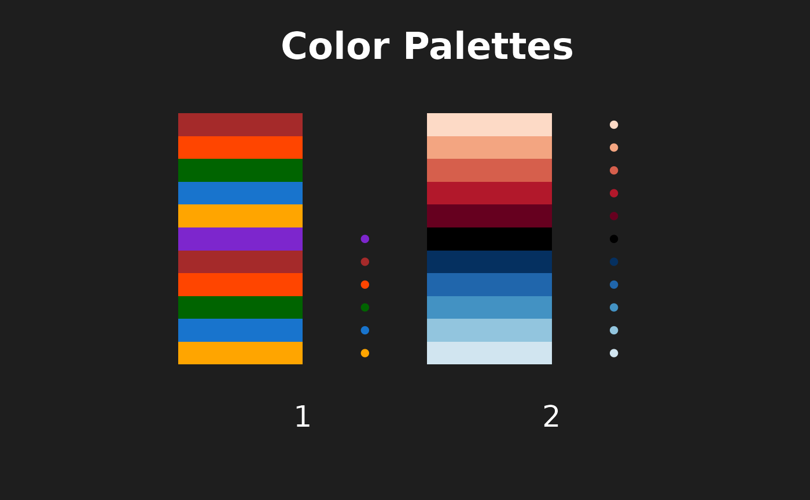

Get RAVE Theme from Package Settings
Examples
pal = get_rave_theme('rave', type = c('continuous', 'discrete'), theme='light')
print(pal, plot=TRUE)
#> RAVE palettes in "light" mode for "continuous", "discrete" variables
#> Total 2 palettes:
#> Default-Discrete (6 unique colors)
#> Default-Continuous (11 unique colors)

pal = get_rave_theme('rave', type = c('continuous', 'discrete'), theme='dark')
print(pal, plot=TRUE)
#> RAVE palettes in "dark" mode for "continuous", "discrete" variables
#> Total 2 palettes:
#> Default-Discrete (6 unique colors)
#> Default-Continuous (11 unique colors)
